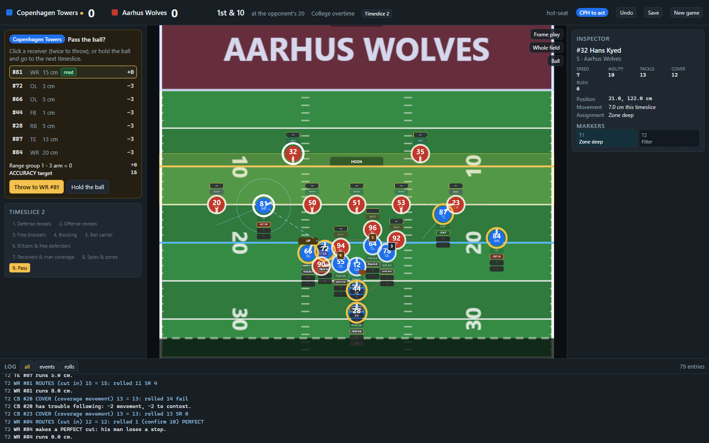
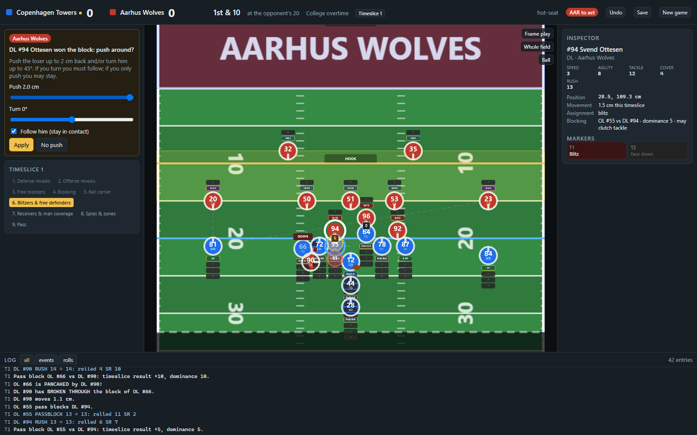
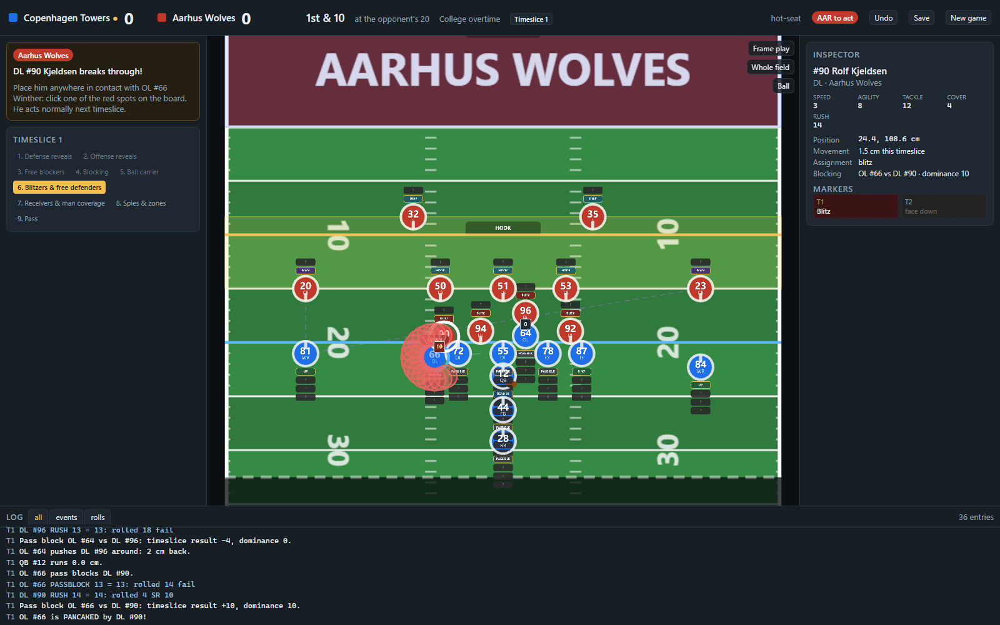

The Community Edition rulebook of American Football: The Board Game, played by two coaches on a 2D board in the browser: hidden markers, timeslices, dominance counters and every dice roll shown.
P frames the play.
American Football: The Board Game (SeriousName, 2017) is a two-player miniatures game in which a play is broken into four timeslices. Before the snap each coach places face-down markers behind every player: routes, cuts, blocks, hand-offs, reads for the quarterback; man, zone, spy or blitz for the defense. Then the timeslices are resolved one phase at a time with a d20 and a measuring tape, so the hidden plans collide on the table and nobody knows whether that blitz is real until the markers turn over.
This is that rulebook as a program. The whole Community Edition is in the engine: skillpoints and rosters, lining up, marker legality, the nine phases of a timeslice, pass and run blocking with the dominance counter, pushing around, pancakes and breaking through, hitting the hole, routes and the route check, man and zone coverage, passing with its read, range, pressure and movement modifiers, contested catches and interceptions, tackling, dragging tacklers, fumbles and the scramble, play action and draws, kick-offs, punts, field goals, tries, and the four game types on three field sizes.



A rulebook written for a table assumes two people who can argue. Every place where the Community Edition is quiet, ambiguous or contradicts itself got a written ruling, tied to the page it interprets, and the implementation follows the ruling. A few that mattered:
| Hand-off timing | The hand-off is announced at the reveal and happens when the ball carrier moves: the quarterback may step to meet a deep back, then the runner must be within 3 cm or the ball is fumbled at his base. Run blocks are legal from phase 3 of that timeslice. |
|---|---|
| Holes | A hole is a gap between two engaged players of at least 1 cm but narrower than a base. A wider gap needs no roll; aiming through an engaged base is simply blocked. |
| Play action | Until the quarterback's next marker shows, the defense sees the back with the ball and reacts as if it were in play. A tackle on the decoy reveals the fake. |
| Pancake margins | Read literally: pass blocking at ±10; run blocking at −10 for the defender and more than 10 for the blocker. Two perfects cancel. |
| Loose balls | When nobody comes up with a fumble the next timeslice is a loose-ball timeslice: both coaches move towards it, everyone within 5 cm rolls again. A ball nobody can reach is dead with the team that last had it. |
The engine is a coroutine: the game yields a decision (who must decide what, with the options and constraints) and receives an action. Everything automatic between two decisions just happens. A game is therefore its dice seed plus its list of actions, which gives save, load, undo and replay for free, and lets a server run the engine and send each coach only the view that coach may see. The board is three.js, orthographic, in centimetres; the panels are Preact. The rules are covered by 232 tests organised by rulebook section, and an auto-coach plays whole games across every field size and game type to make sure nothing stalls.
The game runs on the same code with a Node server for online tables (two browsers, one table, hidden markers filtered on the server). It lives at kaliffen.github.io/afm, built from its own repository; the static site offers hot-seat play.